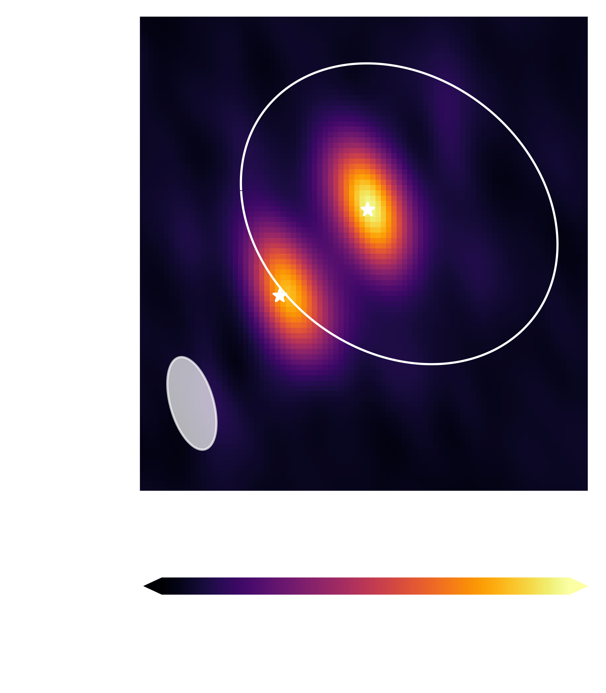
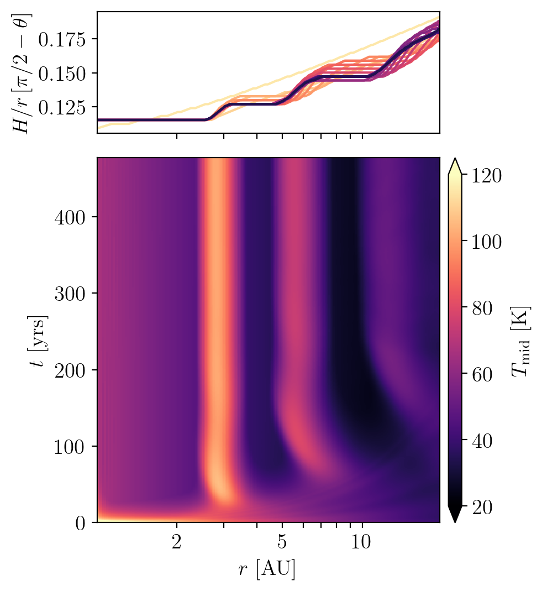

Research
Double the Disks in DF Tau
This work shares new results from our Atacama Large Millimeter Array (ALMA) program, where we’re studying how disks around young stars evolve in binary systems. These disks are the birthplaces of planets, so understanding how they behave in systems with two stars is key to understanding how (and where) planets can form.
We focus on the young binary system DF Tau, which has an orbital period of ~48 years. Earlier optical and infrared observations suggested that only the brighter star had a disk. But our new ALMA observations at 1.3 mm tell a different story. We actually see two nearly equal-brightness components in this system.
We present these observations within the context of updated stellar and orbital properties, and we find evidence that the secondary star is missing its inner disk. Since both stars likely formed together, with the same composition, in the same environment, and at the same time, you’d expect their disks to evolve in similar ways. Instead, we’re seeing signs that one disk is dissipating faster than the other.
We explore a few possible explanations for what might speed up disk clearing in one star but not the other. This kind of uneven evolution matters, because the inner disk is where terrestrial planets form.
Irradiated Disks May Settle into Staircases
Much of a protoplanetary disk is thermally controlled by irradiation from the central star. Such a disk, long thought to have a smoothly flaring shape, is unstable to the so-called 'irradiation instability'. But what's the outcome of such an instability? In particular, is it possible that such a disk settles into a shape that is immune to the instability? In this paper, we combine Athena++ with a simplified thermal treatment to show that passively heated disks settle into a 'staircase' shape. Here, the disk is punctuated by bright rings and dark gaps, with the bright rings intercepting the lion's share of stellar illumination, and the dark gaps hidden in their shadows. The optical surface of such a disk (height at which starlight is absorbed) resembles a staircase. Although our simulations do not have realistic radiative transfer, we use the RADMC3d code to show that this steady state is in good thermal equilibrium. It is possible that realistic disks reach such a state via ways not captured by our simulations. In contrast to our results here, two previous studies have claimed that irradiated disks stay smooth. We show here that they err on different issues. The staircase state, if confirmed by more sophisticated radiative hydrodynamic simulations, has a range of implications for disk evolution and planet formation.
Eccentric Gas Disk Orbiting the White Dwarf SDSS J1228+1040
This paper, authored by an undergraduate student of mine, investigates an eccentric gaseous disk orbiting a white dwarf.
Kepler Planets and Metallicity
This paper inestigates the relationships between planet size, stellar mass, and metallicity using planets with updated planet radii and advanced statistical methods. We looked at all Kepler planets with radii between 1 and 4 Earth radii, which includes so called super-Earths and sub-Neptunes. These two sub-populations likely have one formation mechanism, and then the bimodality of the radius distribution is carved out afterward because of the effects of intense stellar radiation. We found that the size of Kepler planets depends on the size of the star and not the metallicity. This means that planet formation depends more on the size of the protoplanetary disk, and not necessarily the amount of solids within the disk. We also found that super-Earths and sub-Neptunes are hosted by the same types of stars, which is in accordance with their formation scenario. Finally, we found that Kepler planets orbit stars that are significantly somewhat metal rich, and were able to constrain the dependency on metallicity for their occurrence rates. This project was completed under the supervision of Prof. Yanqin Wu at the University of Toronto.

